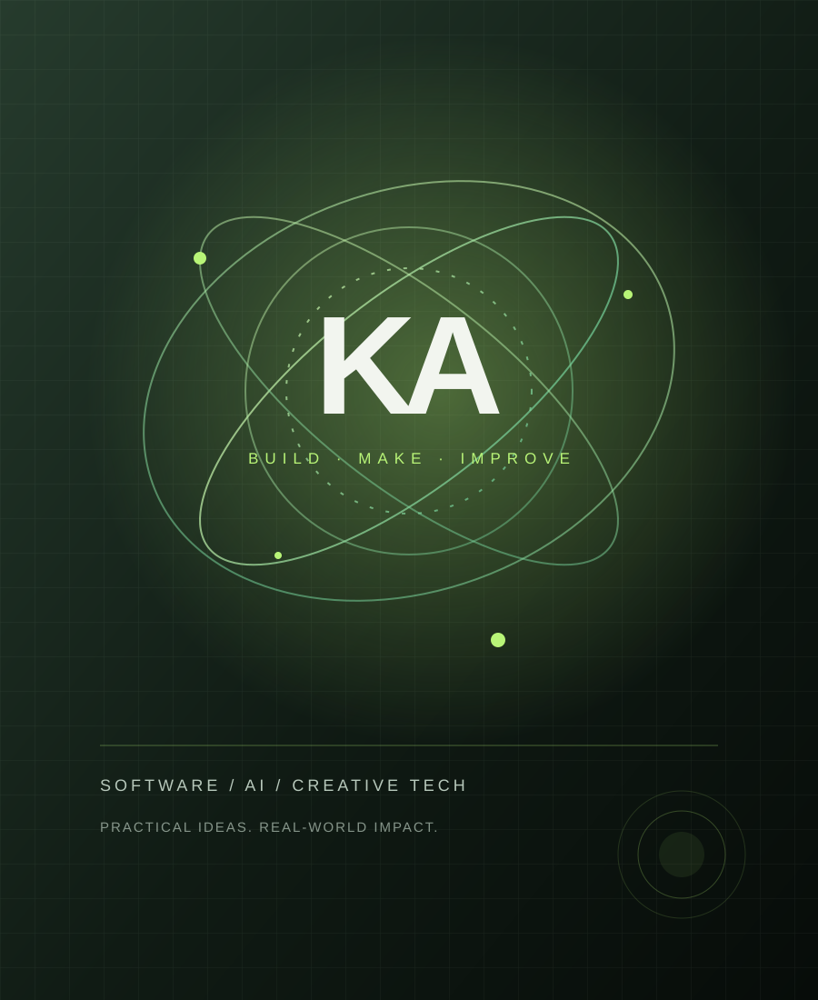

AI & intelligent tools
Experiments that use AI to help people learn, research, create and make better-informed decisions.
Explore technology ↗SOFTWARE · AI · INNOVATION · UGANDA
I build and explore practical digital products across software, artificial intelligence, education and creative media — with a focus on making technology useful to real people.

WHAT I WORK ON
From AI-assisted learning to useful mobile-first tools, the goal is to turn promising ideas into accessible products that can keep improving.
Experiments that use AI to help people learn, research, create and make better-informed decisions.
Explore technology ↗Responsive, installable experiences designed for real devices, low-friction access and practical everyday use.
See projects ↗Digital storytelling, audio, music and broadcast-inspired creative work alongside software development.
Explore media ↗SELECTED PROJECTS
A few projects from a growing collection of software and creative experiments.
Education technology exploring practical AI support and personalized learning.
Open SomaGPT ↗A claim-verification concept for checking online information and presenting evidence-led results.
Open iVerifyAI ↗A mobile-first audio studio prototype exploring local audio workflows and source separation.
View Stemit repository ↗LET'S BUILD SOMETHING
I’m interested in practical collaborations around software, AI, learning and digital media. Reach out through a professional profile or send a message directly.